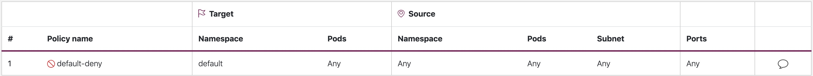
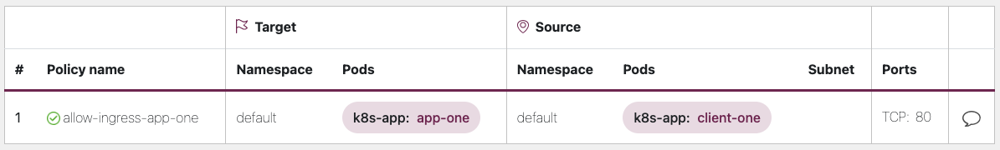
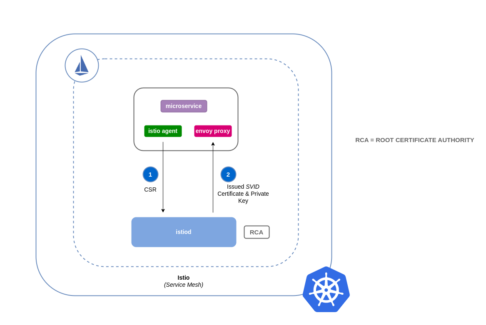

网络安全¶
网络安全有几个方面。第一个涉及应用规则来限制网络流量在服务之间的流动。第二个涉及在传输过程中对流量进行加密。在 EKS 上实现这些安全措施的机制各不相同，但通常包括以下几项：
流量控制¶
- 网络策略
- 安全组
网络加密¶
- 服务网格
- 容器网络接口 (CNI)
- Ingress 控制器和负载均衡器
- Nitro 实例
- ACM 私有 CA 与 cert-manager
网络策略¶
在 Kubernetes 集群中，默认情况下所有 Pod 之间的通信都是允许的。虽然这种灵活性可能有助于促进实验，但它并不被认为是安全的。Kubernetes 网络策略为您提供了一种限制 Pod 之间网络流量(通常称为东西向流量)以及 Pod 和外部服务之间网络流量的机制。Kubernetes 网络策略在 OSI 模型的第 3 层和第 4 层运行。网络策略使用 pod、命名空间选择器和标签来识别源和目标 pod，但也可以包括 IP 地址、端口号、协议或这些的组合。网络策略可以应用于 pod 的入站或出站连接，通常称为入站和出站规则。
通过 Amazon VPC CNI 插件的原生网络策略支持，您可以实现网络策略来保护 kubernetes 集群中的网络流量。这与上游 Kubernetes 网络策略 API 集成，确保与 Kubernetes 标准的兼容性和遵从性。您可以使用上游 API 支持的不同标识符来定义策略。默认情况下，所有入站和出站流量都被允许进入 pod。当指定了一个具有 policyType Ingress 的网络策略时，只有来自 pod 所在节点的连接以及入站规则允许的连接才能进入 pod。出站规则也是如此。如果定义了多个规则，那么在做出决策时会考虑所有规则的并集。因此，评估的顺序不会影响策略结果。
注意
当您首次配置 EKS 集群时，VPC CNI 网络策略功能默认是不启用的。请确保您部署了支持的 VPC CNI 插件版本，并在 vpc-cni 插件上将 ENABLE_NETWORK_POLICY 标志设置为 true 以启用此功能。有关详细说明，请参阅 Amazon EKS 用户指南。
建议¶
开始使用网络策略 - 遵循最小特权原则¶
创建默认拒绝策略¶
与 RBAC 策略一样，建议在网络策略中遵循最小特权访问原则。首先创建一个拒绝所有策略，该策略限制了命名空间内的所有入站和出站流量。
apiVersion: networking.k8s.io/v1
kind: NetworkPolicy
metadata:
name: default-deny
namespace: default
spec:
podSelector: {}
policyTypes:
- Ingress
- Egress

提示
上图是由 Tufin 的网络策略查看器创建的。
创建一个规则以允许 DNS 查询¶
一旦您设置了默认的全部拒绝规则，您就可以开始层层添加其他规则，例如允许 pod 查询 CoreDNS 进行名称解析的规则。
apiVersion: networking.k8s.io/v1
kind: NetworkPolicy
metadata:
name: allow-dns-access
namespace: default
spec:
podSelector:
matchLabels: {}
policyTypes:
- Egress
egress:
- to:
- namespaceSelector:
matchLabels:
kubernetes.io/metadata.name: kube-system
podSelector:
matchLabels:
k8s-app: kube-dns
ports:
- protocol: UDP
port: 53

逐步添加规则以选择性地允许流量在命名空间/pod 之间流动¶
了解应用程序需求，并根据需要创建细粒度的入站和出站规则。下面的示例展示了如何将端口 80 上的入站流量限制为从 client-one 到 app-one。这有助于最小化攻击面，降低未经授权访问的风险。
apiVersion: networking.k8s.io/v1
kind: NetworkPolicy
metadata:
name: allow-ingress-app-one
namespace: default
spec:
podSelector:
matchLabels:
k8s-app: app-one
policyTypes:
- Ingress
ingress:
- from:
- podSelector:
matchLabels:
k8s-app: client-one
ports:
- protocol: TCP
port: 80

监控网络策略执行¶
- 使用网络策略编辑器
- 网络策略编辑器 有助于可视化、安全评分、从网络流日志自动生成
- 以交互方式构建网络策略
- 审计日志
- 定期审查您的 EKS 集群的审计日志
- 审计日志提供了有关在您的集群上执行的操作的大量信息，包括对网络策略的更改
- 使用此信息跟踪您的网络策略随时间的变化，并检测任何未经授权或意外的更改
- 自动化测试
- 通过创建一个模拟生产环境的测试环境来实现自动化测试，并定期部署试图违反您的网络策略的工作负载。
- 监控指标
- 配置您的可观察性代理从 VPC CNI 节点代理中抓取 Prometheus 指标，这允许监控代理健康状况和 SDK 错误。
- 定期审核网络策略
- 定期审核您的网络策略，以确保它们满足您当前的应用程序要求。随着您的应用程序的发展，审核为您提供了机会来删除冗余的入站、出站规则，并确保您的应用程序没有过多的权限。
- 使用 Open Policy Agent (OPA) 确保网络策略的存在
- 使用如下所示的 OPA 策略，以确保在上线应用程序 pod 之前网络策略始终存在。如果没有相应的网络策略，此策略将拒绝上线带有标签
k8s-app: sample-app的 k8s pod。
package kubernetes.admission
import data.kubernetes.networkpolicies
deny[msg] {
input.request.kind.kind == "Pod"
pod_label_value := {v["k8s-app"] | v := input.request.object.metadata.labels}
contains_label(pod_label_value, "sample-app")
np_label_value := {v["k8s-app"] | v := networkpolicies[_].spec.podSelector.matchLabels}
not contains_label(np_label_value, "sample-app")
msg:= sprintf("The Pod %v could not be created because it is missing an associated Network Policy.", [input.request.object.metadata.name])
}
contains_label(arr, val) {
arr[_] == val
}
故障排除¶
监控 vpc-network-policy-controller 和节点代理日志¶
启用 EKS 控制平面控制器管理器日志，以诊断网络策略功能。您可以将控制平面日志流式传输到 CloudWatch 日志组，并使用 CloudWatch 日志洞察 执行高级查询。从日志中，您可以查看哪些 pod 端点对象被解析为网络策略、策略的协调状态，并调试策略是否按预期工作。
此外，Amazon VPC CNI 允许您启用从 EKS 工作节点收集和导出策略执行日志到 Amazon Cloudwatch 的功能。启用后，您可以利用 CloudWatch 容器洞察 来提供与网络策略相关的使用情况洞察。
Amazon VPC CNI 还附带了一个 SDK，提供了与节点上的 eBPF 程序交互的接口。当 aws-node 部署到节点上时，就会安装该 SDK。您可以在节点上的 /opt/cni/bin 目录下找到已安装的 SDK 二进制文件。在启动时，SDK 支持基本功能，如检查 eBPF 程序和映射。
记录网络流量元数据¶
AWS VPC 流日志捕获流经 VPC 的流量的元数据，例如源和目标 IP 地址和端口以及接受/丢弃的数据包。可以分析此信息，以查找 VPC 内资源(包括 Pod)之间的可疑或异常活动。但是，由于 pod 的 IP 地址在替换时经常会发生变化，因此仅依赖流日志可能是不够的。Calico Enterprise 通过 pod 标签和其他元数据扩展了流日志，使得更容易解析 pod 之间的流量流。
安全组¶
EKS 使用 AWS VPC 安全组 (SG) 来控制 Kubernetes 控制平面和集群的工作节点之间的流量。安全组也用于控制工作节点与其他 VPC 资源、外部 IP 地址之间的流量。当您配置 EKS 集群(使用 Kubernetes 版本 1.14-eks.3 或更高版本)时，会为您自动创建一个集群安全组。此安全组允许 EKS 控制平面和托管节点组之间的无阻碍通信。为了简单起见，建议您将集群 SG 添加到所有节点组，包括非托管节点组。
在 Kubernetes 版本 1.14 和 EKS 版本 eks.3 之前，EKS 控制平面和节点组配置了单独的安全组。EKS 控制平面和节点组安全组的最小和建议规则可以在 https://docs.aws.amazon.com/eks/latest/userguide/sec-group-reqs.html 中找到。_控制平面安全组_的最小规则允许从工作节点 SG 进入端口 443。这个规则允许 kubelet 与 Kubernetes API 服务器通信。它还包括端口 10250 的出站流量到工作节点 SG;10250 是 kubelet 监听的端口。类似地，_节点组_规则允许从控制平面 SG 进入端口 10250，并允许端口 443 的出站流量到控制平面 SG。最后，还有一条规则允许节点组内节点之间的无阻碍通信。
如果您需要控制集群内运行的服务与集群外运行的服务(如 RDS 数据库)之间的通信，请考虑为 pod 使用安全组。使用安全组为 pod，您可以将一个现有的安全组分配给一组 pod。
警告
如果您引用了在创建 pod 之前不存在的安全组，则 pod 将无法被调度。
您可以通过创建 SecurityGroupPolicy 对象并指定 PodSelector 或 ServiceAccountSelector 来控制分配给哪些 pod 的安全组。将选择器设置为 {} 将把 SecurityGroupPolicy 中引用的 SG 分配给命名空间或命名空间中所有服务帐户中的所有 pod。在实现安全组为 pod 之前，请务必熟悉所有注意事项。
重要
如果您使用 SG 为 pod，您必须创建允许端口 53 出站到集群安全组的规则。同样，您必须更新集群安全组以接受来自 pod 安全组的端口 53 入站流量。
重要
安全组的限制在使用安全组为 pod 时仍然适用，因此请谨慎使用。
重要
您必须为 pod 配置的所有探测创建来自集群安全组(kubelet)的入站流量规则。
重要
安全组为 pod 依赖于一个称为 ENI 汇聚的功能，该功能旨在提高 EC2 实例的 ENI 密度。当 pod 被分配给一个 SG 时，VPC 控制器会将节点组中的一个分支 ENI 与该 pod 关联。如果在调度 pod 时节点组中没有足够的分支 ENI，则 pod 将保持挂起状态。实例可以支持的分支 ENI 数量因实例类型/系列而有所不同。有关更多详细信息，请参阅 https://docs.aws.amazon.com/eks/latest/userguide/security-groups-for-pods.html#supported-instance-types。
虽然安全组为 pod 提供了一种 AWS 原生的方式来控制集群内外的网络流量，而无需策略守护程序的开销，但也有其他选择。例如，Cilium 策略引擎允许您在网络策略中引用 DNS 名称。Calico Enterprise 包括一个将网络策略映射到 AWS 安全组的选项。如果您已经实现了服务网格(如 Istio)，您可以使用出口网关来限制网络出口到特定的完全限定域或 IP 地址。有关此选项的更多信息，请阅读关于 Istio 中出口流量控制的三部分系列。
何时使用网络策略与安全组为 pod？¶
何时使用 Kubernetes 网络策略¶
- 控制 pod 到 pod 的流量
- 适合控制集群内 pod 之间的网络流量(东西向流量)
- 在 IP 地址或端口级别(OSI 第 3 层或第 4 层)控制流量
何时使用 AWS 安全组为 pod (SGP)¶
- 利用现有的 AWS 配置
- 如果您已经有一组复杂的 EC2 安全组来管理对 AWS 服务的访问，并且您正在将应用程序从 EC2 实例迁移到 EKS，SGP 可以成为一个非常好的选择，允许您重用安全组资源并将其应用于您的 pod。
- 控制对 AWS 服务的访问
- 如果您在 EKS 集群中运行的应用程序需要与其他 AWS 服务(如 RDS 数据库)通信，请使用 SGP 作为控制从 pod 到 AWS 服务的流量的有效机制。
- 隔离 Pod 和节点流量
- 如果您想完全分离 pod 流量和其余节点流量，请在
POD_SECURITY_GROUP_ENFORCING_MODE=strict模式下使用 SGP。
使用 安全组为 pod 和 网络策略 的最佳实践¶
- 分层安全
- 结合使用 SGP 和 kubernetes 网络策略，采用分层安全方法
- 使用 SGP 限制对集群外部 AWS 服务的网络级访问，而 kubernetes 网络策略可以限制集群内 pod 之间的网络流量
- 最小特权原则
- 只允许 pod 或命名空间之间必要的流量
- 分段您的应用程序
- 尽可能通过网络策略对应用程序进行分段，以减少应用程序受损时的影响范围
- 保持策略简单明了
- Kubernetes 网络策略可以非常细致和复杂，最好保持它们尽可能简单，以降低错误配置的风险并简化管理开销
- 减少攻击面
- 通过限制应用程序的暴露来最小化攻击面
注意
安全组为 pod 提供了两种执行模式：strict 和 standard。当在 EKS 集群中同时使用网络策略和安全组为 pod 功能时，您必须使用 standard 模式。
在网络安全方面，分层方法通常是最有效的解决方案。结合使用 kubernetes 网络策略和 SGP 可以为您在 EKS 中运行的应用程序提供一个健壮的深度防御策略。
服务网格策略执行或 Kubernetes 网络策略¶
服务网格是一个专用的基础设施层，您可以将其添加到您的应用程序中。它允许您透明地添加诸如可观察性、流量管理和安全性等功能，而无需将它们添加到您自己的代码中。
服务网格在 OSI 模型的第 7 层(应用程序)强制执行策略，而 kubernetes 网络策略在第 3 层(网络)和第 4 层(传输)运行。在这个领域有许多产品，如 AWS AppMesh、Istio、Linkerd 等。
何时使用服务网格进行策略执行¶
- 已经投资了服务网格
- 需要更高级的功能，如流量管理、可观察性和安全性
- 流量控制、负载均衡、断路器、速率限制、超时等
- 对您的服务性能的详细洞察(延迟、错误率、每秒请求数、请求量等)
- 您想实现和利用服务网格的安全功能，如 mTLS
对于简单的用例，选择 Kubernetes 网络策略¶
- 限制哪些 pod 可以相互通信
- 网络策略所需的资源较少，因此对于简单的用例或较小的集群，运行和管理服务网格的开销可能是不合理的
提示
网络策略和服务网格也可以一起使用。使用网络策略提供基线安全级别和 pod 之间的隔离，然后使用服务网格添加流量管理、可观察性和安全性等其他功能。
第三方网络策略引擎¶
当您有高级策略需求时，如全局网络策略、支持基于 DNS 主机名的规则、第 7 层规则、基于服务帐户的规则以及显式拒绝/日志操作等，请考虑第三方网络策略引擎。Calico 是 Tigera 的一个开源策略引擎，可以很好地与 EKS 配合使用。除了实现 Kubernetes 网络策略的全套功能外，Calico 还支持扩展的网络策略，提供了更丰富的功能集，包括对第 7 层规则(如 HTTP)的支持，当与 Istio 集成时。Calico 策略可以在命名空间、Pod、服务帐户或全局范围内定义。当策略范围为服务帐户时，它会将一组入站/出站规则与该服务帐户关联。通过适当的 RBAC 规则，您可以防止团队覆盖这些规则，从而允许 IT 安全专业人员安全地委派命名空间管理。Isovalent 是 Cilium 的维护者，他们也扩展了网络策略，包括对第 7 层规则(如 HTTP)的部分支持。Cilium 还支持 DNS 主机名，这对于限制 Kubernetes 服务/Pod 与 VPC 内外的资源之间的流量非常有用。相比之下，Calico Enterprise 包括一个功能，可以将 Kubernetes 网络策略映射到 AWS 安全组，以及 DNS 主机名。
您可以在 https://github.com/ahmetb/kubernetes-network-policy-recipes 找到常见 Kubernetes 网络策略的列表。类似的 Calico 规则可以在 https://docs.projectcalico.org/security/calico-network-policy 中找到。
迁移到 Amazon VPC CNI 网络策略引擎¶
为了保持一致性并避免 pod 通信行为出现意外，建议在您的集群中只部署一个网络策略引擎。如果您想从第三方迁移到 VPC CNI 网络策略引擎，我们建议在启用 VPC CNI 网络策略支持之前，先将现有的第三方网络策略 CRD 转换为 Kubernetes 网络策略资源。然后，在单独的测试集群中测试转换后的策略。这样可以让您识别并解决任何潜在的问题或 pod 通信行为不一致。
迁移工具¶
为了协助您的迁移过程，我们开发了一个名为 K8s 网络策略迁移器的工具，它可以将您现有的 Calico/Cilium 网络策略 CRD 转换为 Kubernetes 原生网络策略。转换后，您可以直接在运行 VPC CNI 网络策略控制器的新集群上测试转换后的网络策略。该工具旨在帮助您简化迁移过程，并确保顺利过渡。
重要
迁移工具只会转换与原生 kubernetes 网络策略 API 兼容的第三方策略。如果您正在使用第三方插件提供的高级网络策略功能，迁移工具将跳过并报告这些功能。
请注意，目前 AWS VPC CNI 网络策略工程团队不支持迁移工具，它是以最大努力的方式提供给客户的。我们鼓励您利用这个工具来促进您的迁移过程。如果您在使用该工具时遇到任何问题或错误，我们恳请您在 GitHub issue 中提出。您的反馈对我们来说是宝贵的，将有助于我们不断改进我们的服务。
其他资源¶
- Kubernetes & Tigera: 网络策略、安全性和审计
- Calico Enterprise
- Cilium
- NetworkPolicy 编辑器 来自 Cilium 的交互式策略编辑器
- Inspektor Gadget advise network-policy gadget 根据网络流量分析建议网络策略
传输中的加密¶
需要符合 PCI、HIPAA 或其他法规的应用程序可能需要在传输过程中加密数据。如今，TLS 是加密线路上数据的事实标准。TLS 与其前身 SSL 一样，使用加密协议在网络上提供安全通信。TLS 使用对称加密，其中加密数据的密钥是基于会话开始时协商的共享密钥生成的。以下是在 Kubernetes 环境中加密数据的一些方式。
Nitro 实例¶
在以下 Nitro 实例类型(如 C5n、G4、I3en、M5dn、M5n、P3dn、R5dn 和 R5n)之间交换的流量默认情况下会自动加密。当存在中间跳转(如传输网关或负载均衡器)时，流量不会被加密。有关传输中的加密以及支持默认网络加密的完整实例类型列表的更多详细信息，请参阅传输中的加密。
容器网络接口 (CNI)¶
WeaveNet 可以配置为使用 NaCl 加密自动加密所有袖套流量，并使用 IPsec ESP 加密快速数据路径流量。
服务网格¶
传输中的加密也可以通过服务网格(如 App Mesh、Linkerd v2 和 Istio)来实现。AppMesh 支持使用 X.509 证书或 Envoy 的 Secret Discovery Service(SDS) 进行 mTLS。Linkerd 和 Istio 都支持 mTLS。
aws-app-mesh-examples GitHub 存储库提供了使用 X.509 证书和 SPIRE 作为 SDS 提供程序配置 Envoy 容器的 mTLS 的演练：
App Mesh 还支持使用 AWS Certificate Manager (ACM) 颁发的私有证书或存储在虚拟节点本地文件系统上的证书进行 TLS 加密。
aws-app-mesh-examples GitHub 存储库提供了使用 ACM 颁发的证书和与您的 Envoy 容器一起打包的证书配置 TLS 的演练：
Ingress 控制器和负载均衡器¶
Ingress 控制器是一种智能路由来自集群外部的 HTTP/S 流量到集群内部运行的服务的方式。通常，这些 Ingress 前面是一个第 4 层负载均衡器，如经典负载均衡器或网络负载均衡器 (NLB)。加密流量可以在网络中的不同位置终止，例如在负载均衡器、Ingress 资源或 Pod 上。您终止 SSL 连接的方式和位置将最终由您组织的网络安全策略决定。例如，如果您有一个要求端到端加密的策略，您将不得不在 Pod 上解密流量。这将给您的 Pod 带来额外的负担，因为它必须花费周期建立初始握手。总的来说，SSL/TLS 处理是非常耗费 CPU 的。因此，如果您有灵活性，请尝试在 Ingress 或负载均衡器上执行 SSL 卸载。
使用 AWS Elastic 负载均衡器进行加密¶
AWS 应用程序负载均衡器 (ALB) 和 网络负载均衡器 (NLB) 都支持传输加密 (SSL 和 TLS)。ALB 的 alb.ingress.kubernetes.io/certificate-arn 注解允许您指定要添加到 ALB 的证书。如果省略了注解，控制器将尝试通过使用主机字段匹配可用的 AWS Certificate Manager (ACM) 证书来向需要它的监听器添加证书。从 EKS v1.15 开始，您可以使用如下所示的 service.beta.kubernetes.io/aws-load-balancer-ssl-cert 注解与 NLB 一起使用。
apiVersion: v1
kind: Service
metadata:
name: demo-app
namespace: default
labels:
app: demo-app
annotations:
service.beta.kubernetes.io/aws-load-balancer-type: "nlb"
service.beta.kubernetes.io/aws-load-balancer-ssl-cert: "<certificate ARN>"
service.beta.kubernetes.io/aws-load-balancer-ssl-ports: "443"
service.beta.kubernetes.io/aws-load-balancer-backend-protocol: "http"
spec:
type: LoadBalancer
ports:
- port: 443
targetPort: 80
protocol: TCP
selector:
app: demo-app
---
kind: Deployment
apiVersion: apps/v1
metadata:
name: nginx
namespace: default
labels:
app: demo-app
spec:
replicas: 1
selector:
matchLabels:
app: demo-app
template:
metadata:
labels:
app: demo-app
spec:
containers:
- name: nginx
image: nginx
ports:
- containerPort: 443
protocol: TCP
- containerPort: 80
protocol: TCP
以下是 SSL/TLS 终止的其他示例。
注意
一些 Ingress，如 AWS LB 控制器，使用注解而不是作为 Ingress 规范的一部分来实现 SSL/TLS。
ACM 私有 CA 与 cert-manager¶
您可以使用 ACM 私有证书颁发机构 (CA) 和 cert-manager (一个流行的 Kubernetes 插件，用于分发、续订和吊销证书)来启用 TLS 和 mTLS，从而保护您在 EKS 中的应用程序工作负载，包括 Ingress、Pod 和 Pod 之间的通信。ACM 私有 CA 是一个高度可用、安全的托管 CA，无需支付管理自己的 CA 的前期和维护成本。如果您正在使用默认的 Kubernetes 证书颁发机构，那么有机会通过 ACM 私有 CA 来提高您的安全性并满足合规性要求。ACM 私有 CA 在 FIPS 140-2 级别 3 硬件安全模块(非常安全)中保护私钥，而默认 CA 将密钥编码存储在内存(不太安全)中。集中式 CA 还为您提供了更好的控制和审计能力，可以管理 Kubernetes 环境内外的私有证书。
用于工作负载之间相互 TLS 的短期 CA 模式¶
在 EKS 中使用 ACM 私有 CA 进行 mTLS 时，建议您使用短期证书和_短期 CA 模式_。虽然在通用 CA 模式下也可以颁发短期证书，但对于需要频繁颁发新证书的用例，使用短期 CA 模式的成本效益更高(比通用模式便宜约 75%)。此外，您还应尝试将私有证书的有效期与 EKS 集群中的 pod 生命周期保持一致。在此了解有关 ACM 私有 CA 及其优势的更多信息。
ACM 设置说明¶
首先按照 ACM 私有 CA 技术文档中提供的步骤创建一个私有 CA。创建私有 CA 后，按照常规安装说明安装 cert-manager。安装 cert-manager 后，按照 GitHub 上的设置说明安装私有 CA Kubernetes cert-manager 插件。该插件允许 cert-manager 从 ACM 私有 CA 请求私有证书。
现在您已经拥有了一个私有 CA 和一个安装了 cert-manager 和插件的 EKS 集群，是时候设置权限并创建 issuer 了。更新 EKS 节点角色的 IAM 权限，以允许访问 ACM 私有 CA。将 <CA_ARN> 替换为您的私有 CA 的值：
{
"Version": "2012-10-17",
"Statement": [
{
"Sid": "awspcaissuer",
"Action": [
"acm-pca:DescribeCertificateAuthority",
"acm-pca:GetCertificate",
"acm-pca:IssueCertificate"
],
"Effect": "Allow",
"Resource": "<CA_ARN>"
}
]
}
也可以使用 IAM 角色服务帐户，或 IRSA。请参阅下面的附加资源部分，了解完整示例。
通过创建一个名为 cluster-issuer.yaml 的自定义资源定义文件，在 Amazon EKS 中创建一个 Issuer，其中包含以下内容，将 <CA_ARN> 和 <Region> 信息替换为您的私有 CA。
apiVersion: awspca.cert-manager.io/v1beta1
kind: AWSPCAClusterIssuer
metadata:
name: demo-test-root-ca
spec:
arn: <CA_ARN>
region: <Region>
部署您创建的 Issuer。
您的 EKS 集群现已配置为从私有 CA 请求证书。现在您可以使用 cert-manager 的 Certificate 资源来颁发证书，方法是将 issuerRef 字段的值更改为您上面创建的私有 CA Issuer。有关如何指定和请求证书资源的更多详细信息，请查看 cert-manager 的证书资源指南。在此处查看示例。
ACM 私有 CA 与 Istio 和 cert-manager¶
如果您在 EKS 集群中运行 Istio，您可以禁用 Istio 控制平面(特别是 istiod)充当根证书颁发机构 (CA) 的功能，并将 ACM 私有 CA 配置为工作负载之间 mTLS 的根 CA。如果您采用这种方法，请考虑在 ACM 私有 CA 中使用_短期 CA 模式_。有关更多详细信息，请参阅上一节和这篇博客文章。
Istio 中证书签名的工作方式(默认)¶
Kubernetes 中的工作负载使用服务帐户进行标识。如果您没有指定服务帐户，Kubernetes 会自动为您的工作负载分配一个。此外，服务帐户会自动挂载一个关联的令牌。该令牌用于服务帐户的工作负载向 Kubernetes API 进行身份验证。服务帐户可能足以作为 Kubernetes 的身份，但 Istio 有自己的身份管理系统和 CA。当工作负载及其 envoy 边车代理启动时，它需要从 Istio 获得一个分配的身份，以被视为可信任并被允许与网格中的其他服务通信。
为了从 Istio 获得这个身份，istio-agent 会向 Istio 控制平面发送一个称为证书签名请求(或 CSR)的请求。此 CSR 包含服务帐户令牌，以便在处理之前可以验证工作负载的身份。此验证过程由 istiod 处理，它充当注册机构(或 RA)和 CA。RA 充当守门人，确保只有经过验证的 CSR 才能通过并发送到 CA。一旦 CSR 被验证，它将被转发到 CA，CA 将颁发一个包含 SPIFFE 身份和服务帐户的证书。该证书称为 SPIFFE 可验证身份文档(或 SVID)。SVID 被分配给请求服务，用于识别目的和加密服务之间传输的流量。

在 Istio 中使用 ACM 私有 CA 的证书签名工作方式¶
您可以使用一个名为 Istio 证书签名请求代理(istio-csr)的 cert-manager 插件将 Istio 与 ACM 私有 CA 集成。该代理允许 Istio 工作负载和控制平面组件使用 cert manager 发行者(在本例中是 ACM 私有 CA)进行保护。istio-csr 代理公开了与 istiod 在默认配置中提供的相同的服务，用于验证传入的 CSR。不同之处在于，在验证之后，它会将请求转换为 cert manager 支持的资源(即与外部 CA 发行者的集成)。
每当有来自工作负载的 CSR 时，它将被转发到 istio-csr,后者将从 ACM 私有 CA 请求证书。istio-csr 与 ACM 私有 CA 之间的通信由 AWS 私有 CA 发行者插件启用。Cert manager 使用此插件从 ACM 私有 CA 请求 TLS 证书。发行者插件将与 ACM 私有 CA 服务通信，为工作负载请求签名证书。一旦证书被签名，它将被返回给 istio-csr,后者将读取签名的请求，并将其返回给发起 CSR 的工作负载。

Istio 与私有 CA 设置说明¶
- 首先按照本节中的相同[设置说明]完成以下步骤：
- 创建一个私有 CA
- 安装 cert-manager
- 安装发行者插件
- 设置权限并创建一个发行者。该发行者代表 CA，用于签署
istiod和网格工作负载证书。它将与 ACM 私有 CA 通信。 - 创建一个
istio-system命名空间。这是将部署istiod 证书和其他 Istio 资源的地方。 -
安装配置为使用 AWS 私有 CA 发行者插件的 Istio CSR。您可以保留工作负载的证书签名请求，以验证它们是否获得批准和签名(
preserveCertificateRequests=true)。helm install -n cert-manager cert-manager-istio-csr jetstack/cert-manager-istio-csr \ --set "app.certmanager.issuer.group=awspca.cert-manager.io" \ --set "app.certmanager.issuer.kind=AWSPCAClusterIssuer" \ --set "app.certmanager.issuer.name=<the-name-of-the-issuer-you-created>" \ --set "app.certmanager.preserveCertificateRequests=true" \ --set "app.server.maxCertificateDuration=48h" \ --set "app.tls.certificateDuration=24h" \ --set "app.tls.istiodCertificateDuration=24h" \ --set "app.tls.rootCAFile=/var/run/secrets/istio-csr/ca.pem" \ --set "volumeMounts[0].name=root-ca" \ --set "volumeMounts[0].mountPath=/var/run/secrets/istio-csr" \ --set "volumes[0].name=root-ca" \ --set "volumes[0].secret.secretName=istio-root-ca" -
使用自定义配置安装 Istio，以将
istiod替换为cert-manager istio-csr作为网格的证书提供程序。此过程可以使用 Istio Operator 进行。apiVersion: install.istio.io/v1alpha1 kind: IstioOperator metadata: name: istio namespace: istio-system spec: profile: "demo" hub: gcr.io/istio-release values: global: # Change certificate provider to cert-manager istio agent for istio agent caAddress: cert-manager-istio-csr.cert-manager.svc:443 components: pilot: k8s: env: # Disable istiod CA Sever functionality - name: ENABLE_CA_SERVER value: "false" overlays: - apiVersion: apps/v1 kind: Deployment name: istiod patches: # Mount istiod serving and webhook certificate from Secret mount - path: spec.template.spec.containers.[name:discovery].args[7] value: "--tlsCertFile=/etc/cert-manager/tls/tls.crt" - path: spec.template.spec.containers.[name:discovery].args[8] value: "--tlsKeyFile=/etc/cert-manager/tls/tls.key" - path: spec.template.spec.containers.[name:discovery].args[9] value: "--caCertFile=/etc/cert-manager/ca/root-cert.pem" - path: spec.template.spec.containers.[name:discovery].volumeMounts[6] value: name: cert-manager mountPath: "/etc/cert-manager/tls" readOnly: true - path: spec.template.spec.containers.[name:discovery].volumeMounts[7] value: name: ca-root-cert mountPath: "/etc/cert-manager/ca" readOnly: true - path: spec.template.spec.volumes[6] value: name: cert-manager secret: secretName: istiod-tls - path: spec.template.spec.volumes[7] value: name: ca-root-cert configMap: defaultMode: 420 name: istio-ca-root-cert -
部署您创建的上述自定义资源。
-
现在您可以在 EKS 集群中的网格中部署一个工作负载并强制执行 mTLS。

工具和资源¶
- Amazon EKS 安全沉浸式研讨会 - 网络安全
- 如何在 EKS 中实现 cert-manager 和 ACM 私有 CA 插件以启用 TLS。
- 使用新的 AWS 负载均衡器控制器和 ACM 私有 CA 在 Amazon EKS 上设置端到端 TLS 加密。
- 私有 CA Kubernetes cert-manager 插件在 GitHub 上。
- 私有 CA Kubernetes cert-manager 插件用户指南。
- 如何使用 AWS 私有证书颁发机构短期证书模式
- 在 Kubernetes 中验证服务网格 TLS，使用 ksniff 和 Wireshark
- ksniff
- egress-operator 一个操作员和 DNS 插件，用于控制从集群出口的流量，无需协议检查
- NeuVector by SUSE 开源、零信任容器安全平台，提供策略网络规则、数据丢失防护 (DLP)、Web 应用程序防火墙 (WAF) 和网络威胁签名。